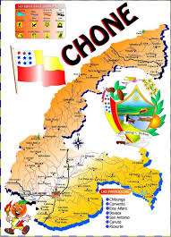

Chone es una ciudad situada en la provincia de Manabí, en la costa oeste de Ecuador. Aquí hay algunos detalles geográficos sobre Chone:
*Ubicación: Se encuentra en la región litoral de Ecuador, al noreste de la provincia de Manabí.
*Coordenadas: Aproximadamente a 0° 41' 0" S de latitud y 80° 6' 0" O de longitud.
*Altitud: La ciudad se encuentra a una altitud promedio de 20 metros sobre el nivel del mar.
*Río Chone: La ciudad está atravesada por el río Chone, que es una característica geográfica prominente y juega un papel importante en la economía y el ecosistema de la región.
*Clima: El clima en Chone es tropical, con una temporada húmeda y una seca. Las temperaturas suelen ser cálidas durante todo el año.
*Chone es conocida por su agricultura, especialmente la producción de cacao y plátano, y por sus tradiciones culturales.

Aunque los primeros geógrafos e historiadores de la Real Audiencia de Quito no delimitaron sus territorios con exactitud, uno de los primeros mapas oficiales a cargo del Sacerdote quiteño Juan de Velasco y la sucesiva obra del sabio riobambeño Pedro Vicente Maldonado con la Carta Geográfica de la Provincia de Quito se nombraba a Chone exclusivamente por primera vez como un poblado criollo domesticado a raíz de la entronización de la Casa de Borbón en el trono de España. Eso fue instando por lo tanto a encaminar la ejecución de las Reformas borbónicas que en su nombre el Rey Don Felipe V ordenara la creación de nuevos poblados y la reorganización urbana de los mismos para actualizar geográficamente las ciudades, sitiales, villas o pueblos del Nuevo Mundo y demás dominios que pertenecieren a la corona española.Se desconoce por qué razón Chone fue fundado en un territorio demasiado llano y menos montañoso a diferencia como lo fueron otras ciudades de la zona, pero si se afirma la existencia de la Fundación eclesiástica por el Sacerdote mercedario auxiliar de la entonces Villa Nueva de San Gregorio de Puerto Viexo Fray Antonio Cedeño y Macías, quien en nombre de la Corona Española tomó la iniciativa de la fundación del llamado Pueblo Viejo de Chone un 7 de agosto de 1735, estableciéndola como una Parroquia leal a los principios de la Fe Católica Apostólica Romana. En una de las llanuras costeras más bajas de la zona Norte de Manabí es donde se encuentra ubicada la Ciudad de los Naranjos en Flor (Chone) siendo fundada geográficamente entre los territorios pantanosos, semisecos, subtropicales y húmedos que derivan de la Cordillera Occidental de los Andes adyacente directamente al Océano Pacífico y a los pueblos relacionados directamente con la geografía costeña.Sin Duda alguna la triste realidad geográfica de Chone es homónima e irrenunciable, puesto que su ubicación del la zona urbana se centra a la orillas de un río que da por terminado su recorrido en un estuario (Véase Estuario del Río Chone); esta tesis o teoría admite que quizás no fueron los españoles quienes escogieron el lugar; sino que los aborígenes de la zona habitaban estos lugares desde hace muchos siglos antes de la época colonial (Véase en Historia del Cantón Chone). La realidad especifica que los antecedentes naturales del Cantón Chone han sido muy devastadores y catastróficos debido a la propia gestión de sus habitantes; hecho que promovió la sublevación simbólica del 5 de mayo de 1895, cuando independientemente fue una de las primeras ciudades ecuatorianas en reconocer el Triunfo de la Revolución Liberal proclamando a Don Eloy Alfaro Jefe de la Primera Magistratura del Estado.UbicaciónChone está entre los 1230 minutos de latitud norte y 45 minutos de latitud sur de la línea equinoccial, y a 79 grados, 0 minutos de longitud oeste del meridiano de Greenwich.LímitesChone limita al norte con la provincia de Esmeraldas y el cantón Pedernales; al sur con los cantones de Pichincha, Bolívar y Tosagua; al este con El Carmen, Flavio Alfaro y la provincia de Los Ríos y, al oeste con los cantones Sucre, junin , Jama y Pedernales.Coordenadas geográficasLatitud S 0° 50` / S 0° 40` y Longitud W 80° 15` / W 80° 0`Coordenadas Planas UTM (aprox):Norte: 9907880 / 9926300 y Este: 583450 / 611270Código Intenacional: 3591-IOrografíaEl relieve más alto está concentrado en la parte sur-este, siendo su mayor altitud en el Cerro Blanco con 560 metros.Cotas extremas: 560 y 5 msnmm
Su potencialidad está en el turismo rural y paisajístico, donde se practica la pesca deportiva. Otro atractivo son sus grandes montañas, donde se desarrolla el turismo de excursión y aventura.
Con potencial para turismo arqueológico, en el sitio La Dibujada, donde se han encontrado vestigios arqueológicos de las tribus “Ñauzas” y “Chunos”. Cuenta con la reserva de humedales más grande del país, en el sitio “La Segua”.
El caldo y bistec de gallina criolla, es uno de los platos típicos, también los productos lácteos especialmente el “queso chonero”. La ganadería es su mayor potencial productivo.
El cantón Chone es una entidad territorial subnacional ecuatoriana de la provincia de Manabí, administrada por un municipio en sus instancias jurisdiccionales. Su sede y capital es Chone, donde residen todas sus principales instituciones públicas y privadas. El cantón Chone se extiende a lo largo de toda la zona norte y septentrional de la provincia de Manabí, ocupando la mayor proporción territorial de dicha jurisdicción, ubicándose en la zona noroccidental de la región Costa ecuatoriana y en plena línea ecuatorial. Está dividida a nivel hemisférico por dicha principal línea paralela que la sobrevuela encima de un subsuelo productivo, húmedo y tórrido. Oficialmente consta dividida en 9 parroquias: 2 urbanas y 7 rurales.
La Alcaldía de Chone
El burgomaestre o alcalde de San Cayetano de Chone, cuando asume sus funciones, se lo considera además heredero del jefe indio que dominó las zonas actuales de Chone en tiempos precolombinos, por lo que se contempla que el alcalde, en su despacho, ocupa el Sillón del Chuno y Sillón del Colibrí. Históricamente, a mediados del siglo xx, los alcaldes de Chone fueron denominados Presidentes del Consejo Cantonal. De acuerdo con la actual vigente legislación ecuatoriana, el alcalde o alcaldesa de Chone, ipso iure, también adquiere la calidad de miembro en el consejo de su provincia asignada, es decir que se convierte jurídicamente en Consejero Provincial de Manabí.